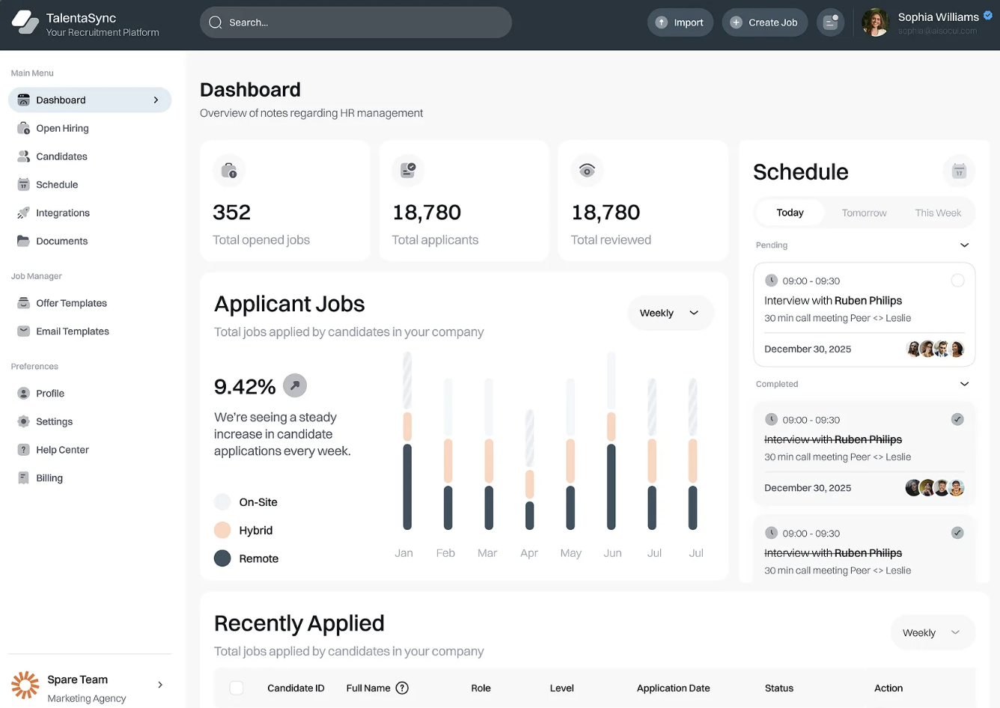

Too many candidates,
too little signal.
How a US-based recruitment agency turned an overwhelmed pipeline into a system that runs on logic, not individual effort and memory.

The Situation
A US-based premium recruitment agency was operating at volume. Leads were coming in consistently, the candidate pool existed, and the team was experienced. On paper, the pipeline looked healthy.
In practice, it was not.
Requirements coming in were broad. Broad enough that nobody on the team could tell, at intake, which ones were worth pursuing immediately and which ones would dissolve the moment someone asked a follow-up question. Senior team members were spending significant time on requirements that had no business reaching them yet. Meanwhile, the candidate pool sat largely unmobilised, distributed across inboxes and spreadsheets with no owned environment to keep it warm.
The team did not have a sourcing problem. They had a systems problem.
What we found
When we mapped the pipeline, three gaps became clear.
There was no qualification layer between demand and delivery. Every requirement that came in went directly to the team regardless of its readiness. Attention, the agency's most finite resource, was being distributed indiscriminately.
The candidate pool had no home. Candidates existed as records, not as a community. Keeping them warm required individual effort each time, which meant it rarely happened consistently.
Outreach was reactive. When a requirement was confirmed, the team had to build outreach from scratch. There was no infrastructure that could activate quickly against a qualified need.
These three gaps compounded each other. Fixing sourcing or adding headcount would not have addressed any of them.
What we built

The solution was a three-layer recruitment operations system. Each layer addressed one gap specifically.
A candidate community on Discord
We moved the existing candidate pool into a structured Discord environment. This created an owned space where candidates could be organised by role type and availability, kept warm through ambient communication, and activated quickly when a relevant requirement was confirmed. The pool went from being a static list to a living environment that generated signal without requiring individual outreach each time.
A requirements qualification flow
We built a structured intake process that every requirement had to pass through before it was raised to the team as an active search. The flow asked a fixed set of qualifying questions around role definition, candidate criteria, timeline, and decision-making authority. Requirements that could not answer these questions clearly were returned for sharpening before they moved forward.
AI sat inside this layer as a first-pass filter, flagging vague language, identifying missing criteria, and suggesting clarifying questions based on role type. The AI handled pattern recognition. A human made the final call on whether a requirement was ready. That division of labour kept the system honest.
LinkedIn and email outreach sequences
Once a requirement passed qualification, a structured outreach sequence activated against the relevant segment of the candidate community. Sequences were written by role type, timed to signals from the Discord layer, and required no individual composition from the team for each search. Outreach became a response to a confirmed need rather than a scramble built from nothing.
What changed
The three layers did not eliminate volume. They changed where the team's attention landed.
Requirements reaching senior team members were pre-qualified. The candidate pool was reachable without individual effort. Outreach ran against confirmed briefs rather than speculative ones. The operation became manageable at the same volume that had previously felt overwhelming.
The agency now has a pipeline that runs on system logic rather than individual effort and memory.
Client identity withheld at their request. Outcomes described reflect the operational changes delivered during the engagement.
Work with a similar problem?
If your team is dealing with volume it cannot process cleanly, the problem is almost always upstream of sourcing.
We find where the system is breaking and build what fixes it. One conversation is enough to know whether we can help.